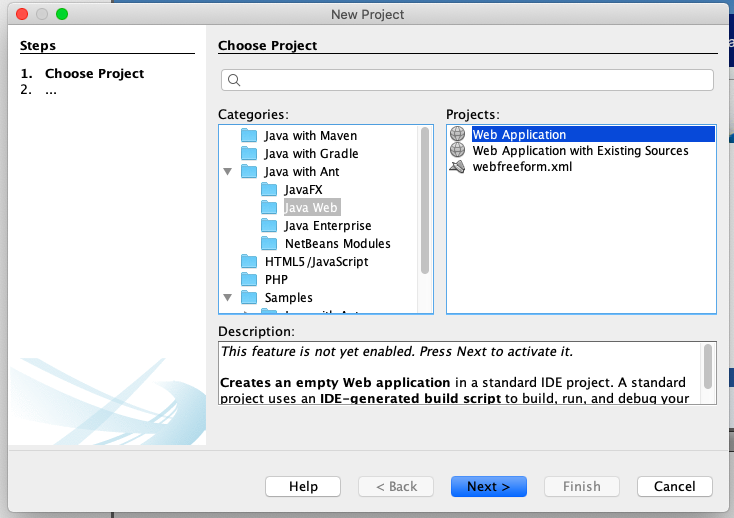
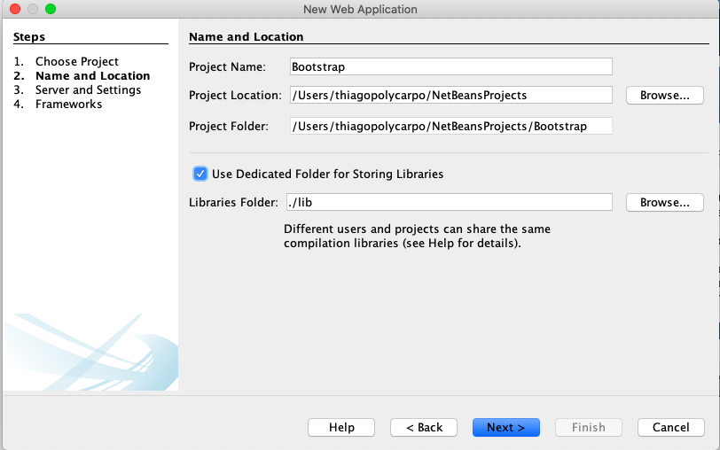
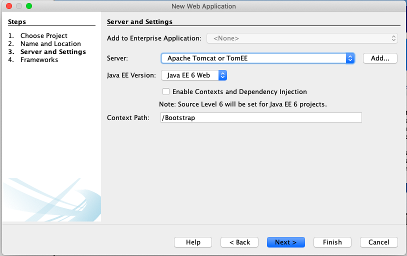
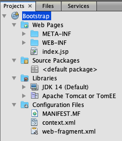
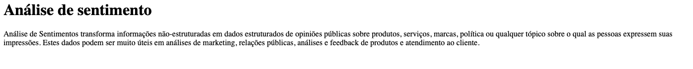
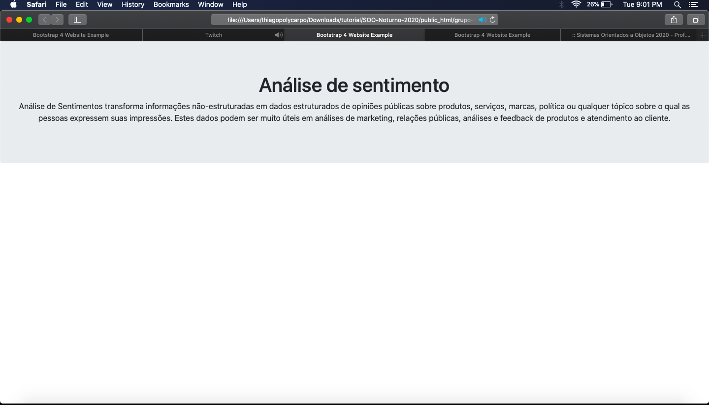
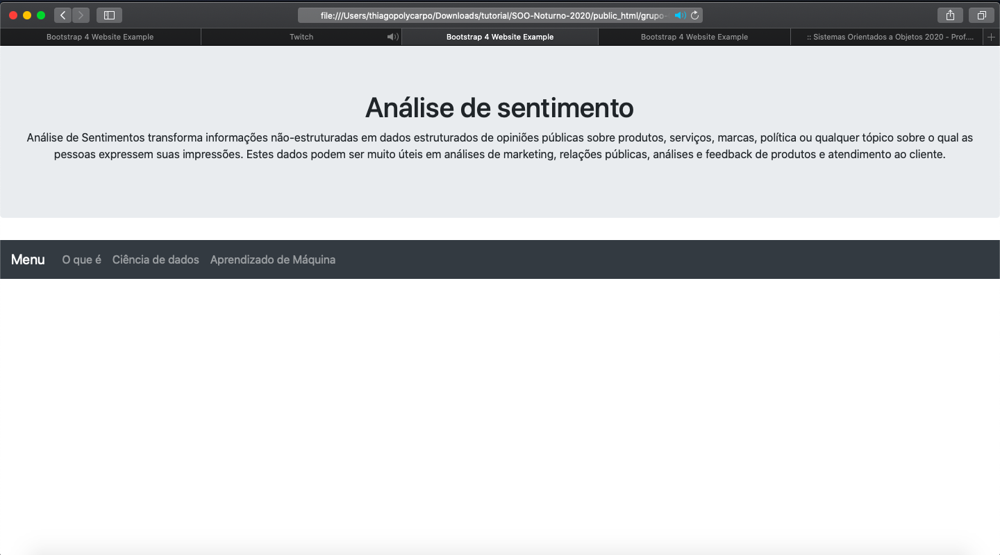
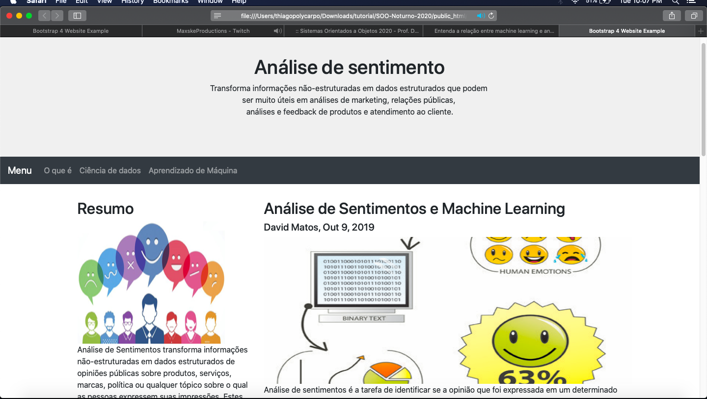
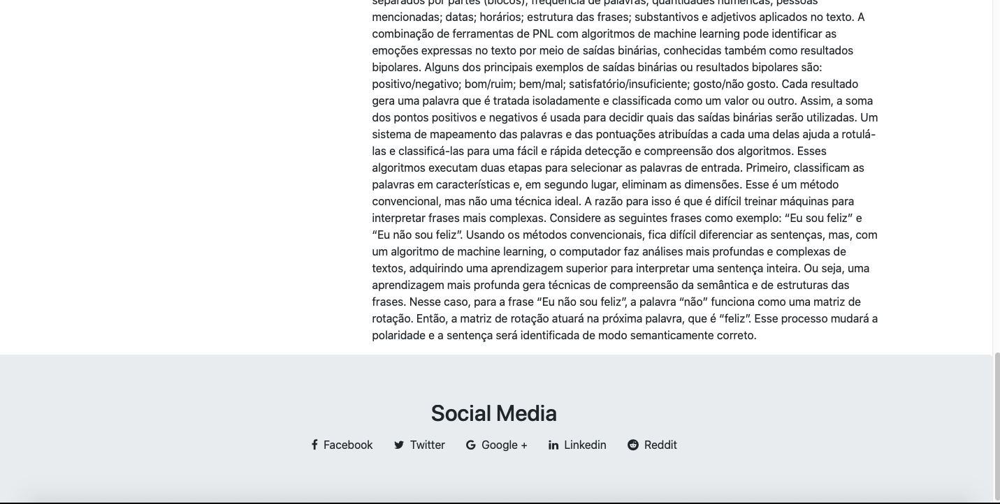

Prof. Dr. Frank J. Affonso.
Projeto criado com ZURB Foundation 6.6.3.
GRUPO: 6
Pré-requisitos
O objetivo principal deste tutorial é apresentar como o framework Boostrap pode ser utilizado no visual de sites e web apps. Esse tutorial utiliza a IDE Netbeans 11.3 na criação dos sites e o Servidor local Apache TomCat 8.0.27.
Bootstrap é o um framework de front-end de HTML, CSS e JavaScript para criação responsiva de apps de celular e websites
É gratuíto
Utilizado com HTML e CSS para design de formulários, botões, tabelas, carrossel de imagem e outros.
Utilizado para criação de pliguins em JavaScript
Vamos trabalhar neste tutorial com projeto Java Web. Para isso, vá ao meu "File" -> "New Project".
Na janela que se abre, selecione a categoria "Java Web" e, em seguida, "Web Application"
Preencha os campos conforme as figuras abaixo e clique no botão "Finish".
  
Observe a estrutura do projeto criado na IDE:
 Observe agora o conteúdo do arquivo index.jps do projeto
Para começar utilizar o Bootstrap é necessário utilizar essas tags do arquivo css e do arquivo js, dessa maneira você já anexou o framework no seu código e pode começar editar sua aparência.
Observe a aparência no inicio do projeto:
Observe a estrutura do projeto criado na IDE:
O próximo passo agora é criar o comando navbar para criarmos os links do site
Observe o conteúdo:
Observe a imagem resultante do código acima:
O próximo passo agora é criar um container onde ficarão as informações do site conforme formos navegando por ele
Observe o conteúdo:
Observe a imagem resultante do código acima:
O próximo passo agora é criar o comando navbar para criarmos o rodape do site:
Observe o conteúdo:
Observe a imagem resultante do código acima:
